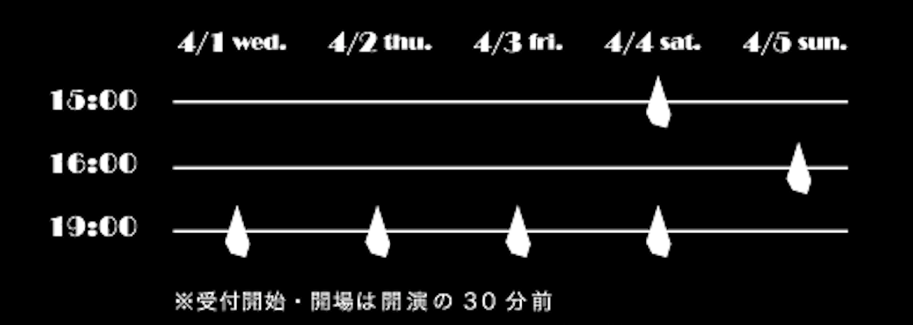

クズ会 エイプリルフール公演
「さっきまで愛した人」
原案 藤井のりひこ（GEKIGAproject / クズ会)
作・演出 朝比奈史樹（演劇集団nohup / クズ会）
CAST
- 小笠原佳秀（殿様ランチ)
- 永瀬千裕
- 藤井のりひこ（GEKIGAproject / クズ会)
STAFF
- 制作：藤井のりひこ（GEKIGAproject / クズ会）
- 宣伝写真：藤澤克成
- 宣伝美術：有賀英二
- 主題歌：杜氏さゆ
- 音響操作・照明操作：鶴谷皇輔（劇団After+Five / クズ会）
- 受付：木所真帆
THANKS
- 渋谷松濤BarBASE
- 殿様ランチ
- 演劇集団nohup
- GEKIGAproject
- 劇団After+Five
PLACE
TICKET
- 予約割引：3,000円
- 当日料金：3,500円
- ※共にワンドリンク込み
SCHEDULE

WHAT'S クズ会
演劇をちゃんとやっているようでやっていないクズみたいな演劇人が、
ちゃんとやってみようと思って企画してしまった会合。
クズの掃き溜めと言われないように頑張ります。